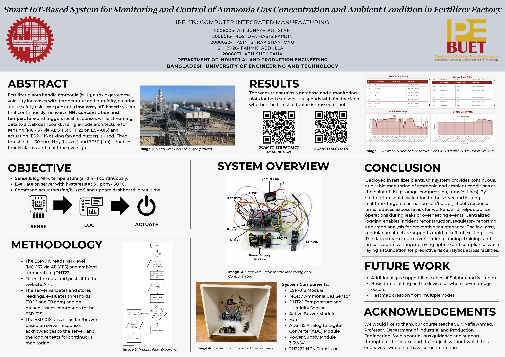

Gasses like ammonia are widely used in the fertilizer industry. Ammonia is very harmful at higher concentrations. Additionally, controlling temperature and humidity is vital in these environments.
| Device / Component | Quantity | Task / Function |
|---|---|---|
| MQ137 Gas Sensor | 1 | Measures ammonia (NH₃) concentration (ppm) |
| DHT22 Sensor | 1 | Measures temperature and humidity |
| Exhaust Fan | 1 | Ventilates area when ammonia/temperature exceeds threshold |
| LED/Buzzer Alarm | 1 | Alerts personnel of hazardous conditions |
| ESP-01S Wi-Fi Module | 1 | Sends real-time data to web server |
| Adafruit ADS1115 ADC | 1 | Reads analog value from MQ137 |
Fertilizer industries play a vital role in agriculture but often involve the handling of hazardous gases, particularly ammonia (NH₃). Ammonia poses serious health and safety risks—even at low concentrations it can cause eye and respiratory irritation, and at higher levels, it can lead to chemical burns, respiratory failure, or death.
This project proposes a real-time IoT-based monitoring and control system specifically for fertilizer plants. It uses the MQ137 sensor to detect ammonia levels (in ppm) and a DHT22 sensor to measure temperature and humidity. All sensor data is transmitted via ESP01 Wi-Fi to a central web server for processing and display.
This automated system improves industrial safety through continuous environmental monitoring and intelligent, server-controlled response. It is a low-cost, scalable solution for high-risk environments like fertilizer production plants.

#include <DHT.h>
#include <Wire.h>
#include <Adafruit_ADS1015.h>
#include <ESP8266WiFi.h>
#include <ESP8266HTTPClient.h>
#include <ArduinoJson.h>
const char* ssid = "MHF";
const char* password = "Siebensieben1";
const char* serverHost = "ipe20-buet.top";
const char* endpoint = "/get_data.php";
const char* groupName = "groupA5";
const char* temperatureSensorName = "Temperature";
const char* ammoniaSensorName = "Ammonia";
const char* passcode = "passA5";
#define DHTPIN 2
#define DHTTYPE DHT22
#define FAN_PIN 0
#define BUZZER_PIN 1
DHT dht(DHTPIN, DHTTYPE);
Adafruit_ADS1115 ads;
WiFiClient client;
const float RL = 10000.0; // Load resistor in ohms
const float Ro = 10000.0; // Sensor resistance in clean air (update after calibration)
const float a = -0.42; // Slope from MQ-137 datasheet curve
const float b = 1.92; // Intercept
void setup() {
Serial.begin(115200);
dht.begin();
pinMode(FAN_PIN, OUTPUT);
pinMode(BUZZER_PIN, OUTPUT);
digitalWrite(FAN_PIN, LOW);
digitalWrite(BUZZER_PIN, LOW);
if (!ads.begin()) {
Serial.println("ADS1115 not found!");
while (1);
}
ads.setGain(GAIN_ONE);
WiFi.begin(ssid, password);
Serial.print("Connecting to WiFi");
while (WiFi.status() != WL_CONNECTED) {
delay(300);
Serial.print(".");
}
Serial.println("\nWiFi connected.");
}
float measureAmmonia() {
int16_t adc = ads.readADC_SingleEnded(0);
float voltage = adc * 0.125 / 1000.0;
if (voltage <= 0.01) return 0;
float Rs = (5.0 - voltage) * RL / voltage;
float ratio = Rs / Ro;
float ppm = pow(10, a * log10(ratio) + b);
return ppm;
}
void sendToServer(String sensorName, float sensorValue) {
if (WiFi.status() != WL_CONNECTED) return;
HTTPClient http;
String url = String("http://") + serverHost + endpoint +
"?g=" + groupName +
"&sn=" + sensorName +
"&sd=" + String(sensorValue, 2) +
"&p=" + passcode +
"&format=json";
http.begin(client, url);
int httpCode = http.GET();
if (httpCode > 0) {
String response = http.getString();
StaticJsonDocument<256> doc;
DeserializationError err = deserializeJson(doc, response);
if (!err) {
if (sensorName == temperatureSensorName) {
int fan_feedback = doc["fan_control"];
digitalWrite(FAN_PIN, fan_feedback ? HIGH : LOW);
}
if (sensorName == ammoniaSensorName) {
int buzzer_feedback = doc["buzzer_control"];
digitalWrite(BUZZER_PIN, buzzer_feedback ? HIGH : LOW);
}
}
}
http.end();
}
void loop() {
float humidity = dht.readHumidity();
float temperature = dht.readTemperature();
if (isnan(humidity) || isnan(temperature)) return;
float ammonia = measureAmmonia();
if (temperature > 0 && temperature < 100) {
sendToServer(temperatureSensorName, temperature);
delay(2000);
}
if (ammonia >= 0) {
sendToServer(ammoniaSensorName, ammonia);
}
delay(5000);
}